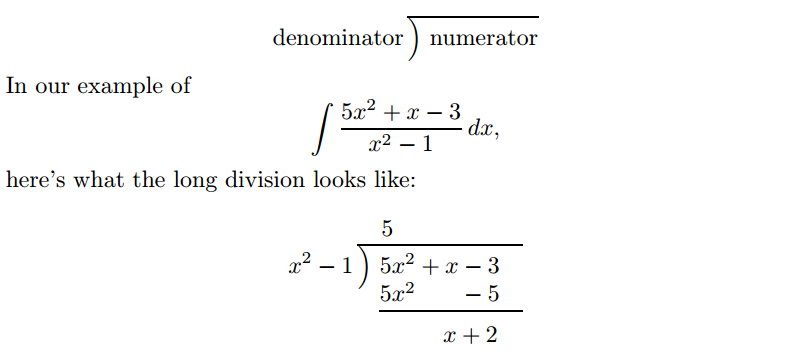
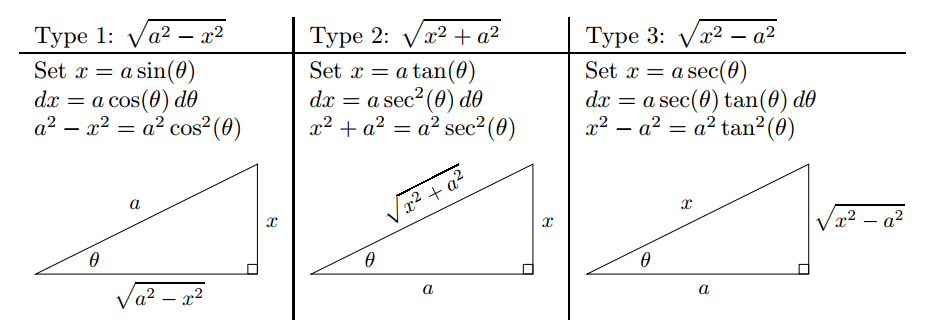
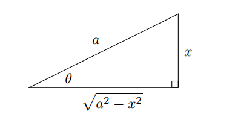
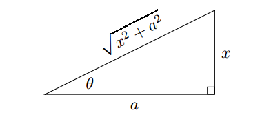
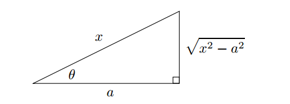

Techniques to Solve Integration Problems¶
Substitution¶
Substitution, also known as "change of variables", comes from the chain rule. What saves us in the case of \(\int 2x e^{x^2} dx\) is the presence of the 2x factor, which is exactly what popped out when we used the chain rule to differentiate \(e^{x^2}\). Now imagine starting with an indefinite integral like this:
The derivative of the quantity \(x^3\) is \(3x^2\). This almost matches the factor \(x^2\) in the integrand, it's only the constant 3 that makes things a little more difficult. Still, constants can move in or out of integrals, so that should not be a problem.
Start off by setting \(t = x^3\), we can get:
The middle step isn't really necessary, but it helps to see \(x^2\) \(dx\) next to each other so that you can justify replacing theme by \(\frac{1}{3} dt\). Anyway, now we can drag the factor of \(\frac{1}{3}\) outside the integral, then integrate:
It's pretty lazy to leave the answer as \(\frac{1}{3} sin(t) + C\). We started in x-land, then migrated over to t-land; now we have to come back to x-land. This isn't hard to do: just replace t by \(x^3\) once agin:
In general, if \(f\) is a differentiable function, then:
And for the type of \(\sqrt[n]{ax + b}\), we can set \(t = \sqrt[n]{ax + b}\) and differentiate both sides of \(t^n = ax + b\)
To summarize the method of substitution:
- for indefinite integrals, change everytyhing to do with \(x\) and \(dx\) to stuff involving \(t\) and \(dt\), do the new integral, then change back to \(x\) stuff;
- for definite integrals, change everything to do with \(x\) and \(dx\) to stuff involving \(t\) and \(dt\), and change the limits of integration to the corresponding \(t\) values as well, then do the new integral(no need to go back to x-land here).
Integration by Parts¶
We saw how to reverse the chain rule by using the method of substitution. There is also a way to reverse the product rule, which is called integration by parts.
The product rule is:
Let's rearrange this equation and then integrate both sides with respect to \(x\):
The first term on the right-hand side is the antiderivative of the derivative of \(uv\), so it's just equal to \(uv + C\). The \(+C\) is unnecessary, though, because the second term ont the right-hand side is already an indefinite integral, so we have:
If we replace \(\frac{dv}{dx} dx\) by \(dv\), and replace \(\frac{du}{dx}\) by \(du\), we get the formula:
Partial Fractions¶
Let's focus our attention on how to integrate a rational function. So we want to find an integral like:
where \(p\) and \(q\) are polynomials.
Here is the complete method for finding the integral of a rational functions:
- Step1, check degrees, divide if necessary: check to see if the degree of the numerator is less than the degree of the denominator. If it is, then you're golden, go to step 2. If not do a long division, then to step 2. 
- Step2, factor the denominator: use the quadratic formula, or guess roots and divide, to factor the denominator of your integrand.
-
Step3, the form: write down the "form", with undetermined constants,
- \(\frac{A}{x + a}\)
- \(\frac{A}{(x + a)^2} + \frac{B}{x + a}\)
- \(\frac{Ax + B}{x^2 + ax + b}\)
- \(\frac{A}{(x + a)^3} + \frac{B}{(x + a)^2} + \frac{C}{x + a}\)
-
Step4, evaluate constants: multiply both sides of this equation by the denominator, then find the constants by:
- substituting clever values of x;
- equating coefficients;
- some combination of aboves.
-
Step5, integrate terms with linear powers on the bottom: solve any integrals whose denominators are powers of linear functions; the answers will involve logs or negative powers of the linear term.
-
Step6, integrate terms with quadratics on the bottom: for each integral with nonfactorable quadratic term in the denominator, complete the square, make a change of variable, then possibly split up into two integrals. This formula is very useful most of the time:
Integrals Involving Trig Identities¶
There are three families of trig identities which are particularly useful in evaluating integrals.
The first family arises from the double-angle formular for \(cos(2x)\). We have known that \(cos(2x) = 2cos^2(x) - 1\) and \(cos(2x) = 1 - 2sin^2(x)\). So we have:
The second family of trig identities involving Pythagorean identities:
Let's look at the third family of identities, the so-called products-to-sums identities:
Integrals Involving Powers of Trig Functions¶
Powers of \(sin\) and/or \(cos\)¶
If one of the powers of \(sin(x)\) or \(cos(x)\) is odd, then grab it. If you've grabbed your odd power, then you need to pull out one power to go with the \(dx\); then deal with what's left by using one of the identities:
Powers of \(tan\)¶
Powers of \(sec\)¶
Powers of \(cot\)¶
Powers of \(csc\)¶
Reduction formula¶
Integrals Involving Trig Substitutions¶

Type 1: \(\sqrt{a^2 - x^2}\)¶
If you have an integral involving an odd power of \(\sqrt{a^2 - x^2}\), the correct substitution to use is \(x = a sin(\theta)\). The reason that this substituation is effective is that:
and we can get \(dx = a cos(\theta)d\theta\). Now you can easily take a square root.

Type 2: \(\sqrt{a^2 + x^2}\)¶
If an integral involves an odd power of \(\sqrt{x^2 + a^2}\), the correct substitution is \(x = a tan(\theta)\), this works because:
Also, we'll need to know that \(dx = a sec^2(\theta) d\theta\). 
Type 3: \(\sqrt{x^2 - a^2}\)¶
Finally, as for \(\sqrt{x^2 - a^2}\), the correct substitution is \(x = a sec(\theta)\)
To take the substitution, we'll also need the fact that \(dx = a sec(\theta)tan(\theta)d\theta\)
